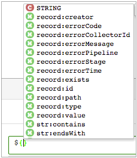
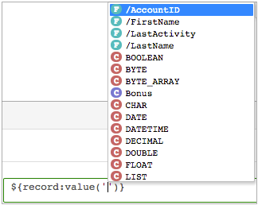
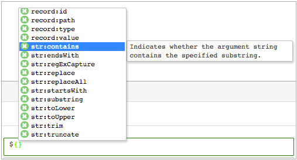
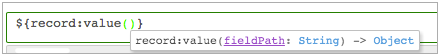

Use the expression language to configure expressions and conditions in processors, such as the Expression Evaluator or Stream Selector. Some destination properties also allow the expression language, such as the directory template for the Hadoop FS destination.
You can use the expression language to define any stage or pipeline property that represents a numeric or string value. You can also use field path expressions to select the fields to use in some processors.
Use expression completion to determine where you can use an expression and the expression elements that you can use in that location.
Precede all expressions with a dollar sign and enclose them with curly brackets, as follows: ${<expression>}.
For example, to add 2 + 2, use the following syntax: ${2 + 2}.
When a pipeline is valid for preview, expression completion provides available field names in a list. When a list is not available, use the appropriate format for the field name.
${record:value("/<field name>")}
For example, the following expressions both concatenate the values from the DATE field with values from the TIME field:
${record:value('/DATE')} ${record:value('/TIME')}
${record:value("/DATE")} ${record:value("/TIME")}
You can use quotation marks and the backslash character to handle special characters in field names.
/"<field w/specialcharacter>"Some examples:
/"Stream$ets" /'city&state' /"product names"
${record:value('/"Stream$ets"'}
${record:value("/'city&state'"}
/ID\'s
${record:value('/ID\\'s')}
When a pipeline is valid for preview, you can generally select fields from a list. When a list is not available or when you are defining a new field name, you need to use the appropriate format for the field name.
To reference a field, you specify the path of the field. A field path describes a data element in a record using a syntax similar to files in directories. The complexity of a field path differs based on the type of data in the record:
/<field name>
${record:value('/CITY')}
/<path to field>/<field name>
${record:value("/region/division/group/employeeName")}
[<index value>]/<path to field>/<field name>
${record:value('[2]/east/HR/employeeName')}
/text
In some processors, you can use the asterisk wildcard (*) as indices in an array or key values in a map. Use a wildcard to help define the field paths for maps and arrays.
/Division[*]/Employee[*]/SSN
/Division[0]/Employee[*]/*
You can use field path expressions in certain processors to determine the set of fields that you want the processor to use.
For example, you want to use the Field Remover processor to remove all fields that start with the same prefix. Instead of manually entering each field name, you can use a field path expression to specify the fields to remove.
/*
/Stores/*
/??_*
/colors[3]
/*[${<complex expression>}]
/*[${f:attribute('info') == '*'}]
/*[${f:type() == 'INTEGER'}]
/*[${f:attribute('storeId') == record:value('/storeId')}]
Expression completion provides a list of data types, runtime parameters, fields, and functions that you can use. The list includes runtime parameters when defined, and available fields when the pipeline is valid for data preview.
When an element does not display in the list, it is not a valid element at the specified location.
Use the following information and tips when you invoke expression completion:
A list of valid expression elements displays. Scroll to view the entire list.

You can invoke expression completion anywhere where you can use an expression.
In the following example, DirectoryRoot is a runtime parameter:



When an expression requires, the expression language attempts implicit data type conversion - a.k.a. data type coercion. When coercion is not possible, Data Collector passes the error records to the stage for error handling.
For example, you have an Expression Evaluator stage configured to send error records to the pipeline for error handling, and the pipeline writes error records to a file. The Expression Evaluator includes an expression that treats string data as integers. When the field includes integer or valid numeric data, the expression language coerces the data type. If the field includes a date, that record is written to the error records file.
To avoid coercion errors, you can use the Field Type Converter earlier in the pipeline to convert data to the appropriate data type.